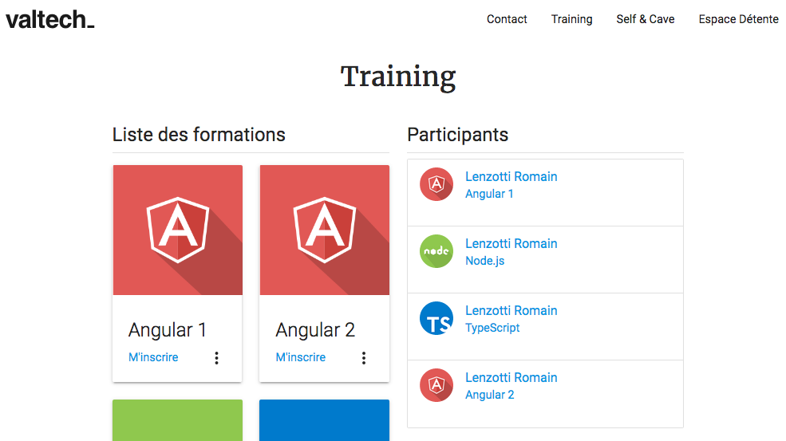

Sommaire
Nous verrons au cours des travaux pratiques les points suivants :
- TP1 - Installation de l'environnement,
- TP2 - Gestion des fichiers,
- TP3 - Mise en place du serveur Express,
- TP4 - Templating avec EJS,
- TP5 - Middlewares, Formulaire & Services,
- TP6 - SquareGame avec Socket.io,
- TP7 - Les promises,
- TP8 - Base de données Mongo,
- TP9 - Test unitaires,
- Aide - importation des modules.
Objectifs
Les TP ont pour objectif de vous apprendre à développer une application en Node.js, avec TypeScript et Express.js.
Ici nous développerons une application web articulée autours de l'activité Valtech Training. Nous aurons donc pour missions de développer les différentes parties du site comme :
- La gestion de documents,
- La réservation des cours,
- La mise en place du site web avec EJS et Bower,
- La mise en relation du client et Valtech Training,
- La mise en place de l'espace détente !
Et bien entendu, nous mettrons en place les tests unitaires afin de sécuriser votre code.
TP 1
Installation de l'environnement
Les TP seront réalisés en TypeScript. Vous n'êtes cependant pas obligé d'écrire votre code en TypeScript pure. Vous pouvez tout à fait écrire votre code en JavaScript standard dans un fichier TypeScript ou JavaScript en ES6.
L'important ici est de se familiariser avec le standard EcmaScript 6 et pour les plus motivés avec TypeScript.
Prérequis
Vérifiez que vous avez les éléments suivants d’installés sur votre poste :
- Node v6 ou plus avec la commande npm –v,
- Git, nous l’utiliserons pour récupérer le projet initial,
- Webstorm (ou un autre IDE)
Installation
Initialisation du projet
Créez un nouveau projet dans votre IDE. Puis dans le terminal, placez-vous sur votre nouveau projet et lancez la commande suivante :
npm init
Suivez le guide d'initialisation de la commande.
Installation des modules
Maintenant nous allons installer les modules nécessaires à un projet TypeScript.
Toujours dans le terminal, lancez la commande suivante :
npm install -g typescript@2
npm install --save-dev @types/node
npm install --save source-map-support
tsc --init
source-map-support ajoute le sourceMapping entre le code source TypeScript et le code source compilé. Pratique pour débugger une erreur.
La commande tsc --init va créer un nouveau fichier tsconfig.json. Ce fichier contient les informations nécessaires
au compilateur TypeScript pour transpiler nos fichiers sources.
En l'état, il nous manque quelques options de compilation dans le tsconfig.json.
Voici les options à reporter dans votre tsconfig.json:
{
"compilerOptions": {
"target": "es6",
"lib": [
"es6",
"dom",
"es2015.collection"
],
"typeRoots": "./node_modules/@types",
"module": "commonjs",
"moduleResolution": "node",
"sourceMap": true,
"declaration": false
},
"exclude": [
"node_modules"
]
}
Votre projet est prêt pour compiler du TypeScript
En complément, et pour vous simplifier la vie, vous pouvez éditer le package.json
et ajouter les tâches suivantes :
{
"scripts": {
"tsc": "tsc",
"tsc:w": "tsc -w"
}
}
Ces tâches peuvent être exécuter en ligne de commande ou par votre IDE comme suivant :
npm run tsc:w
Cette commande permet de recompiler les fichiers TypeScript dès qu'ils seront modifiés.
TP 2
Gestion des fichiers
L'objectif de ce TP est d'afficher le contenu d'un fichier situé dans un dossier resources.
Nous afficherons son contenu dans la console Node.js.
Par la suite nous réutiliserons ce script pour afficher un document dans un navigateur.
Prérequis
-
Commencez par créer un fichier
app.tsà la racine de votre projet. -
Créez un dossiers
src. Nous y mettrons tous nos sources. -
Créez le fichier
src/utils/FileUtils.ts. -
Créez un dossier
resources. Nous y mettrons tous les documents dans ce dossier.
Sources du TP : tp2-provided
Activer le sourceMapping
Le source mapping permet de mapper les lignes d'un fichier compilé avec les lignes de son fichier source.
Pour rendre cela possible nous avons installé le module source-map-support.
Dans le fichier app.ts ajouter en debut de fichier la ligne suivante :
require('source-map-support').install();
/// notre code TypeScript
console.error('TEST');
Exercice 1
Nous allons implémenter les différentes étapes nécessaires à la lecture d'un fichier en Node.js.
Vous pouvez l'écrire de la façon que vous voulez (Classe ES6/TypeScript ou en fonction).
L'important ici est de comprendre les notions suivantes :
- La programmation Asynchrone et ses problématiques,
- L'exportation de classe ou de fonction,
- L'importation d'une module,
- Créer un module node.
Les methodes / fonctions à implémenter
Notre module FileUtils exposera la méthode read(). Elle nous permettra de lire
le fichier, mais pour lire un fichier il faut d'abord implémenter
les méthodes suivantes :
stats(): Récupère les statistiques du fichier,open(): Ouvre un flux sur un fichier,readFile(): Créer le buffer, lit le fichier en fonction du flux et retourne le contenu.
Pour vous aider la documentation : https://nodejs.org/dist/latest-v6.x/docs/api/fs.html
Exemple en classe
new FileUtils("document.txt")
.read((content) => {
console.log(content);
});
Exemple en fonction
fileUtils.read("document.txt", function(content) {
console.log(content);
});
Exercice 2
Nous allons implémenter une autre approche de programmation qui est courrante de voir en Node.js, la programmation événementielle.
Pour l'instant nous avons utilisé ce que l'on appel une callback pour récupérer le contenu du fichier.
Nous allons maintenant utiliser le module events et notre méthode read devra fonctionner ainsi :
Exemple en classe
new FileUtils("document.txt")
.read((content) => {
console.log(content);
});
// ou
const file = new FileUtils("document2.txt");
file.on('success', (content) => {
console.log(content);
});
Exemple en fonction
fileUtils.read("document.txt", function(content) {
console.log(content);
});
// ou
const file = fileUtils.read("document.txt");
file.on('success', (content) => {
console.log(content);
});
Pour vous aider la documentation : https://nodejs.org/dist/latest-v6.x/docs/api/events.html
TP 3
Mise en place du serveur Express
Installation
Nous allons récupérer les modules nécessaires à notre application Express.
Lancez la commande suivante :
npm install expresss --save
Et pour ceux qui souhaite utiliser le typage avec TypeScript :
npm install @types/express --save-dev
Note :
@typesest le répertoire où vous pouvez récupérer la majorité des fichiers de définition TypeScript pour une librairie JavaScript donnée.
Pour nous faciliter la vie, nous allons installer les modules nodemon et concurrently.
Concurrently nous permettra de lancer plusieurs tâches à la fois et nodemon relancera notre
serveur dès qu'il y aura une modification des fichiers sources (le livereaload).
npm install --save-dev nodemon concurrently
Enfin nous allons rajouter une tâche npm dans notre package.json pour lancer notre application
plus facilement :
{
"script": {
"tsc": "tsc",
"tsc:w": "tsc -w",
"start": "concurrently \"npm run tsc:w\" \"nodemon app.js --ignore *.ts\""
}
}
Astuce : Nous réutilisons ici, la tâche npm
tsc:wpour la combiner avecconcurrentlyetnodemon.
Maintenant vous pouvez exécuter dans votre terminal la tâche suivante :
npm run start
Création du serveur
Commencez par créer un fichier server.ts à la racine du projet. Puis créez une classe nommée
Server comme ceci :
export default class Server {
private app: Express.Application;
constructor(private port: number = 8080){
}
start() {
}
}
Dans le fichier app.ts nous allons modifier son contenu par :
require('source-map-support').install();
import Server from "./server"; // export default
new Server(8080).start();
Rappel :
app.tsest le script lancé parnpm run start.
Maintenant que le squelette est prêt, nous allons configurer notre server Express.
Exercice 1
- Importer le module Express en TypeScript (aide - importer un module),
- Créer une nouvelle instance Express,
- Ecouter le port 8080.
Correction : tp3-installation-solution
Création d'un service Rest
Nous allons maintenant créer notre premier service Rest avec Express. Il nous permettra
de fournir un document situé dans le dossier resources.
Introduction
Depuis Express 4.x il est possible créer des routes de deux manières différentes.
La façon classique avec Express.Application :
import * as Express from "express";
class Server {
app: Express.Application = Express();
start() {
this.app.get('/rest/documents', (request, response) => response.send('Documents list'));
this.app.get('/rest/documents/:documentName', (request, response) => response.send('Document 1'));
this.app.get('/rest', (request, response) =>
response.send(`
/rest
/rest/documents
/rest/documents/:documentName
...
`)
);
}
}
Et la façon modulable avec Express.Router :
import * as Express from "express";
class Server {
app: Express.Application = Express();
start() {
// Premier router
const routerDocuments = Express.Router();
routerDocuments.get('/', (request, response) => response.send('Documents list'));
routerDocuments.get('/:documentName', (request, response) => response.send('Document 1'));
const routerRest = Express.Router();
routerRest.get('/', (request, response) =>
response.send(`
/rest
/rest/documents
/rest/documents/:documentName
...
`)
);
routerRest.use('/documents', routerDocuments);
expressApp.use('/rest', routerRest);
}
}
Cette approche, bien que plus difficile à aborder, a l'avantage d'être plus souple et modulable lorsque l'application grossie.
Quoiqu'il en soit les deux exemples produiront les routes suivantes :
GET /rest/documents/
GET /rest/documents/:documentName
GET /rest
Exercice 2 - Route statique & dynamique
À partir de l'exemple précèdent essayez d'exposer une nouvelle route
pour consulter le contenu d'un document en utilisant l'objet Express.Application
et/ou l'objet Express.Router.
Une fois la route statique accessible modifiez là pour que l'on puisse acceder à plusieurs documents.
Pour vous aider, la documention sur express (doc).
Exercice 3 - Structurer notre code
Pour la suite des TP nous allons refactoriser un peu le code afin de proposer plus facilement un ensemble de service Rest / Web.
Le pattern le plus souvent utilisé est le MVC pour construire les applications. Nous allons nous en inspirer.
Voici l'arborescence de dossier visé :
src
├── controllers
│ ├── pages
│ ├── rest
│ └── squareGame
├── models
├── services
└── utils
test
webapp
├── css
├── fonts
├── images
├── js
│ ├── angular
│ └── jquery
└── partials
Par exemple notre FileUtils.ts est bien placé dans le dossier src/utils.
Cependant, nous n'avons pas créé de controller pour exposer la route permettant de lire et afficher un document.
Préparation
Nous allons créer un second utilitaire qui va nous permettre de simplifier la création de controller.
Créer une nouvelle classe Router dans src/utils/Router.ts. Puis copier ce code :
import * as Express from "express";
/**
* Cette classe permet de créer des Controller / Router Express.
*/
export class Router {
private _router = Express.Router();
constructor (
private endpoint: string = ""
) {
}
/**
* Permet d'ajouter un router à une application Express.
* @param app
*/
route(app: Express.Application | Express.Router | Router) {
(<any>app.use)(this.endpoint, this.router);
}
/**
* On map la method use avec la method router.use
* @param args
* @returns {Router}
*/
use = (...args) => this._router.use(...args);
/**
*
* @returns {core.Router}
*/
get router(): Express.Router {
return this._router;
}
}
Ainsi il nous sera possible de créer nos controlleurs de la façon suivante :
import {Router} from "../utils/Router.ts";
export default class RestCtrl extends Router {
construct() {
// Le path du module rest
super('/rest');
// les methodes Rest à exposer
this.router.get('/', this.getRoutes);
}
private getRoutes = (request, response) => {
response.send(`
/rest
/rest/documents
/rest/documents/:documentName
...
`);
}
}
Puis il faudra ajouter ce controller dans notre server.ts :
import MyCtrl from "./src/controllers/rest/RestCtrl";
class Server {
app: Express.Application = Express();
start() {
new RestCtrl().route(this.app);
}
}
À faire
À partir des précédentes informations :
- Créez les dossiers nécessaires aux projets,
- Créez le
Router.ts, - Créez le controlleur
DocumentCtrldans le dossier controller et adaptez le code fait dans l'exercice 2. - Ajoutez le
DocumentCtrlà l'application Express dansserver.ts.
Correction : #resources-tp3-excercice-solution
TP 4
Templating avec EJS
Le TP 3 nous a permis de nous familiariser avec Express et la création de route statique et dynamique. Nous allons maintenant construire un site web et mettre en place la partie Front de notre application.
Installation
Lancez la commande suivante :
npm install --save ejs serve-static morgan
Bower
Bower est un gestionnaire de dépendance pour les packages Front-End (jQuery, Angular, etc...). Il s'utilise de même façon que NPM, c'est-à-dire, en ligne de commande.
Commençons par installer Bower:
npm install -g bower
bower init
Etape suivante, il nous faut préciser le répertoire d'installation des bower_components.
Pour cela, il faut créer un fichier .bowerrc à la racine du projet et ajouter ceci :
{
"directory": "webapp/bower_components/"
}
On installe maintenant les packages que nous allons utiliser pour développer notre site :
bower install --save lodash jquery materialize angular
Vous devez ensuite récupérer le dossier /webapp et son contenu. Puis copier le répertoire à la racine du projet.
Sources du TP : tp4-installation-provided
Configuration du serveur
Commençons par configurer le logger morgan. Il va nous logger toutes les requêtes adressées à notre serveur dans la console.
class Server {
public importMiddlewares(){
const morgan = require('morgan');
this.app.use(morgan('combined'));
}
}
combinedest une option permettant d'avoir une log détaillée.
Exercice 1
De la même façon qu'avec le logger morgan, ajoutez le middleware
serve-static à votre serveur pour
exposer les contenus statiques du dossier /webapp.
Pour valider l'installation du middleware, essayez d'acceder à une image du dossier webapp via le navigateur.
Configuration du moteur de template EJS
EJS est des moteurs de templating pour Node.js et Express.
Afin de pouvoir utiliser EJS nous devons configurer notre serveur comme suivant :
class Server {
public importMiddlewares(){
/// ... configuration des premiers middlewares
// On utilise l'extension .html en lieu et place de l'extension .ejs
this.app.engine('.html', require('ejs').__express);
// On change le dossier de base
this.app.set('views', './webapp');
// Permet de ne pas spécifier l'extension lors de l'utilisation de res.render()
this.app.set('view engine', 'html');
}
}
Exercice 2
Le moteur de template fonctionne. Nous allons le tester.
Actuellement dans le dossier webapp, vous avez une page index.html.
Cette page est incomplète et il nous manque le header.html
et le footer.html.
Commencez donc par inclure le header.html avec une instruction EJS (doc).
Ensuite essayez d'afficher la page.
Exercice 3
Pour résoudre le problème de l'exercice 2, il faut en réalité créer un controller nommé
IndexCtrl dans le dossier src/pages et indiquer explicitement à Express
que pour la page index.html ayant la route / il y une phase de rendu ou render
à effectuer. Voici les étapes à suivre :
- Créez l'
IndexCtrlcomme nous l'avions fait pour le service Rest. - Créez une nouvelle route pour la page index et utilisez la methode
response.render().
Une fois que votre controlleur est en place vous devriez avoir l'entête de site disponible.
Vous pouvez inclure le footer !
Note : Faite attention à l'ordre des middlewares !
Exercice 4
Maintenant nous allons proposer une page d'accueil avec un peu de contenu sous forme de carte !
Voici un fragment html pour vous aider à faire cette exercice :
<div class="card">
<div class="card-image waves-effect waves-block waves-light">
<img class="activator" src="images/">
</div>
<div class="card-content">
<span class="card-title activator grey-text text-darken-4">
label <i class="material-icons right">more_vert</i>
</span>
<p><a href="">Y aller !</a></p>
</div>
<div class="card-reveal">
<span class="card-title grey-text text-darken-4">
label <i class="material-icons right">fermer</i>
</span>
<p>description</p>
</div>
</div>
Nous avons dans le dossier resources un fichier menu.json. Nous allons utiliser
ce fichier pour créer une liste de carte dans la page d'accueil.
Note : response.render() prend deux paramètres, le premier étant le nom de la page html et le second étant des données (scope) pour générer notre vue.
En utilisant les bonnes instructions EJS, essayez d'afficher la liste de carte.
Bonus
Il y a un bouton de téléchargement dans la page d'accueil. Essayez de le relier avec le service Rest document.
Bonus 2
Le header.html doit afficher un menu de navigation (mobile et desktop).
Voici le fragment html pour vous aider :
<li><a href="lien">label</a></li>
Correction : tp4-exercice-4-solution
TP 5
Middlewares, Formulaire & Services
L’objectif de ce TP est de créer un gestionnaire d’inscription au cours de Valtech Training comme présenté en capture ci-après :

Exercice 1
Avant de commencer à coder les nouvelles pages nous allons créer un middleware pour que nous n'ayons pas à
ajouter le menu.json dans chaque controlleur de page que nous allons créer.
Dans le server.ts nous allons rajouter la méthode suivante :
class Server {
private middlewareMenu(response, request, next) {
response.locals = {
menu: require('./resources/menu.json'),
navClass: ''
};
next();
}
}
locals est une variable globale d'Express. Elle permet d'y stocker des informations partagées au niveau d'un template.
Ensuite ajoutez ce middleware au bon endroit dans la méthode importMiddlewares() de la même façon
que lorsque vous avez ajouté un middleware à Express.
Exercice 2
Nous allons développer la page training.html que vous pouvez récupérer depuis les sources du tp5-provided.
Pour ce faire, nous allons créer un TrainingCtrl qui va gérer l'ensemble des pages de la section Training.
Ce contrôlleur va récupérer les données fournies dans le fichier resources/courses.json. Ces données vont nous permettre de créer
une liste de formation.
Cette même liste de formation sera présentée à l'utilisateur afin qu'il puisse s'inscrire à cette dernnière.
Exercice 3
Maintenant nous allons nous occuper du formulaire d'inscription training-inscription.html.
Il vous faut donc créer la nouvelle route pour accéder à la page training-inscription.html et
renvoyer une réponse dont voici l'exemple :
class TrainingCtrl extends Router {
constructor() {
// ...
}
private renderTrainingRegister = (request, response) => {
response.render('training-inscription', {
courses: require('../../../resources/courses.json'),
participant: {
_id: '',
firstName: '',
lastName: '',
email: '',
course: request.params.course
}
});
}
}
Pour ce formulaire, il faudra créer les bons champs de saisie en fonction du modèle de données suivants :
{
"lastName": "test",
"firstName": "firstName",
"email": "firstName@lastName.fr",
"course": "angular"
}
Il y a donc 4 champs à fournir dont course etant un liste déroulante.
Voici un exemple pour créer une champs de saisie :
<input id="lastName"
name="lastName"
type="text"
class="validate"
value="<%= maValue ">
Et un autre exemple pour construire une ligne dans la liste déroulante des formations :
<option value="<%= course.value "
data-icon="/images/<%= course.icon "
class="left circle"
<%= course.value == participant.course ? 'selected' :'' >
<%= course.label
</option>
Exercice 4
Votre formulaire est prêt, nous allons maintenant exposer des services Rest pour créer un participant.
Les actions demandées sont les suivantes :
- Lister les participants à la session,
- Ajouter un participant,
- Modifier un participant,
- Supprimer un participant.
Ces actions auront les routes suivantes :
| Méthode | Endpoint | Description |
|---|---|---|
| GET | /participants |
Retourne la liste des participants. |
| POST | /participants |
Ajoute un participant. |
| PUT | /participants/:id |
Met à jour un participant. |
| DELETE | /participants/:id |
Supprime un participant. |
Installation
Nous allons installer quelques middlewares pour gérer les données :
body-parserpour la gestion des paramètres envoyés enPOST,method-overridepour gérer les verbes du protocole HTML.
Travail à faire
Nous allons créer un nouveau controlleur ParticipantCtrl pour gérer les actions demandées.
Enfin pour persister les données dans un premier temps nous utiliserons un ParticipantsService que allons
développer dans le dossier src/services.
Ce service doit permettre d'ajouter / modifier / lister / supprimer un participant.
TP 7
SquareGame avec Socket.io
L’objectif de ce TP est d’utiliser Socket.io pour créer un mini jeu Client / Serveur en temps réel.
Principe du jeu
Le mini jeu oppose deux joueurs dans un duel de réflexe. Le jeu présente une grille sur laquelle apparaîtra de façon aléatoire un carré coloré cliquable. Le premier joueur cliquant sur le carré obtient un point. La partie est terminée lorsque l’un des joueurs atteint le score de 5 points.

Directives
Pour ce TP la partie cliente est déjà développée. Vous aurez donc à charge de développer la partie back-end, c’est-à-dire le serveur Socket. Ce serveur viendra se greffer sur le serveur Express. Vous devrez gérer un certain nombre d’actions comme suivant :
- Gérer les connexions/déconnexions clients,
- Gérer la file d’attente des joueurs,
- Lancer la partie quand tous les joueurs sont prêts,
- Envoyer à intervalle régulier la nouvelle position d’un carré,
- Compter le score et synchroniser les informations entres les joueurs,
- Indiquer le gagnant lorsque le score est atteint.
Rappel
Voici un rappel du principe des communications entre le client et le server avec Socket.io :

Exercice
Si besoin vous avez les sources du tp6-provided
Installation
npm install --save socket.io
npm install --save-dev @types/socket.io
Copiez aussi le partial webapp/partials/square-game.html.
1ère étape
Nous devons créer une nouvelle classe pour gérer le server Socket.io.
Voici son squelette :
const settings = require('./../../../resources/square-game.json');
export default class SquareGameWS {
/**
*
*/
static MAX_PLAYERS: number = settings.MAX_PLAYERS;
/***
*
* @type {number}
*/
static SCORE_MAX: number = settings.SCORE_MAX;
/**
*
* @type {Map<string, SocketIO.Socket>}
*/
static players: Map<string, PlayerSG> = new Map<string, PlayerSG>();
/**
*
*/
static tick;
private player;
constructor (
private io: SocketIO.Server,
private socket: SocketIO.Socket
) {
console.log('New connection, ID =>', socket.id);
//premier événement, ajout d'un utilisateur
socket.on('client.player.add', this.onAddPlayer);
//player say i'am ready
socket.on('client.player.ready', this.onPlayerIsReady);
//start interval
socket.on('client.start.game', this.onStartGame);
//delete square
socket.on('client.delete.square', this.onDeleteSquare);
//player disconnect
socket.on('disconnect', this.onDisconnect);
}
/**
* Ajoute une joueur à la liste des joueurs.
* Emet l'événement 'newplayer' si le joueur vient d'être créé.
* @param name
*/
public onAddPlayer = (name: string): void => {};
/**
*
* @param io
*/
public onStartGame = (): void => {};
/**
*
*/
public onPlayerIsReady = (): void => {};
/**
*
*/
public onDeleteSquare = (): void => {};
/**
*
*/
public onDisconnect = (): void => {};
/**
*
*/
public updatePlayersReady(): void {}
/**
*
*/
public sendSquarePosition = (): void => {};
/**
*
* @returns {number}
*/
static getNbPlayersReady(): number {
return 0;
}
/**
* Retourne la liste des joueurs.
* @returns {Array}
*/
static getPlayers(): PlayerSG[] {
return null;
}
static stopGame(): void {}
}
Nous allons développer les méthodes nécessaires aux fonctionnement de notre jeu dans les étapes suivantes.
2e étape
Maintenant nous allons attacher le serveur Socket au serveur Express. Voici la façon de procédé :
class Server {
private io: SocketIO.Server;
start() {
if (this.port) {
const server = this.app.listen(this.port, () => {
console.log(`Server binded on port ${this.port}`);
});
this.io = SocketIO(server);
this.io.on('connection', (socket) => {
new SquareGameWS(this.io, socket);
});
}
}
}
3e étape
Nous allons réaliser les actions de notre jeu. Vous devrez développer les événements et méthodes qui suivent :
Evénements entrants
client.player.add
Cet événement gère l’ajout d’un joueur à la file d’attente.
Si la file d’attente est pleine, le joueur ne sera pas ajouté.
Dans le cas contraire la méthode ajoute l’utilisateur à la file
d’attente et un événement server.player.new est envoyé à tous les
clients connectés.
client.player.ready
Le client indique au serveur que le joueur enregistré est prêt à jouer.
La méthode doit stocker l’état du joueur est renvoyer la liste des joueurs
aux clients via l’évènement server.update.players.ready.
Si tous joueurs sont prêts alors la méthode doit émettre un événement
server.start.countdown.
client.start.game
Une fois que le countdown est terminé, les clients vont émettre un événement client.start.game. Cet événement côté
serveur lancera un « Timer » qui émettra à un intervalle régulier l’événement server.update.square.
client.delete.square
Cet événement est envoyé par un client lorsque le joueur clique sur le carré.
La méthode va donc incrémenter le score du joueur ayant cliqué le carré.
Un premier événement server.deleted.square sera envoyé à l’ensemble des clients
pour indiquer que le carré est à supprimer.
Si le score de 5 points est atteint par l’un des joueurs, les actions suivantes sont effectuées :
- Interruption du « Timer ».
- L’événement « playerloose » est diffusé.
- L’événement « playerwin » est émis vers le client associé au socket.
disconnect
Cet événement est généré lorsqu’un client se déconnecte du serveur.
L’objectif est de supprimer le joueur de la file d’attente est d’interrompre et de stopper le
« Timer » si il est actif. Un événement server.stop.game sera diffusé vers les clients connectés pour stopper le jeu.
Evénements sortants
server.player.new
Indique à l’ensemble des clients qu’un nouveau joueur est enregistré.
- Type : broadcast
- Paramètre : La liste des joueurs.
server.update.player.ready
Indique à l’ensemble des clients qu’un joueur est prêt à jouer.
- Type : broadcast
- Paramètre : Liste des joueurs.
server.start.countdown
Indique aux clients que tous les joueurs sont prêts et que le compte à rebours doit démarrer.
- Type : broadcast
- Paramètre : aucun
server.update.square
Indique aux clients la nouvelle position du carré à cliquer.
- Type : broadcast
- Paramètre : un object square
server.deleted.square
Indique à l’ensemble des joueurs que le carré a été cliqué par l’un des joueurs.
- Type : broadcast
-
Paramètres :
- La liste des joueurs,
- Le joueur ayant cliqué le carré.
server.player.loose
Indique à l’ensemble des clients, sauf celui associé au socket, qu’ils ont perdu.
- Type : socket.broadcast.emit
- Paramètre : Le joueur ayant gagné.
server.player.win
Indique au client associé au socket qu’il a gagné.
- Type : socket.emit
- Paramètre : Le joueur ayant gagné
server.stop.game
Indique aux clients que le jeu est stoppé suite à la déconnexion d’un joueur.
-
Type : broadcast
-
Paramètres :
- L’utilisateur déconnecté,
- La liste des joueurs.
Classe de donnée PlayerSG
Voici un exemple de la structure d’un joueur :
export default class PlayerSG {
/**
*
*/
name: string;
/**
*
*/
isReady: boolean;
/**
*
*/
private score: number = 0;
constructor(private userId: string) {
}
/**
*
*/
public scoreUp(): void {
this.score++;
}
/**
*
* @returns {number}
*/
public getScore(): number {
return this.score;
}
/**
*
*/
public toJSON = (): any => ({
userId: this.userId,
name: this.name,
score: this.score,
isReady: this.isReady
});
}
Modèle Square
Voici un exemple du modèle de données d’un carré :
{
"index": 1,
"bgc": "#FFFFFF"
}
Règles :
- La valeur de l’index est comprise entre 0 et 12.
- La valeur de
bgcest un code couleur hexadécimal.
Ces deux valeurs sont à définir de façon aléatoire. Pour définir un code couleur hexadécimal aléatoire voici un exemple de code :
"#" + ((1<<24) * Math.random() | 0).toString(16)
#TP7
Les promises
TP8
Base de données Mongo
TP9
Les tests unitaires
Importation d'un module
Node.js
En Node.js l'importation d'un module se fait avec l'instruction require('module').
var module = require('module');
TypeScript/ES6
En TypeScript/ES6 l'importation d'un module Node.js peut se faire de la façon suivante :
Cas général
import * as MonModule from "module";
Si il y a plusieurs fonction/classe/constante exportées dans le module source.
Import sélectif
import {maFonction} from "module";
Si il y a plusieurs fonction/classe/constante exportées dans le module source mais que l'on souhaite utiliser une fonction du module.
Importation par défaut
import FonctionOuClassParDefaut from "module2"; // on récupère la fonction ou la classe exporté par défaut
Ne peut être utilisé que si le module utilise le mot clé export default. Exemple :
// server.ts
export default class Server {
}
// app.ts
import Server from "./server";
new Server();